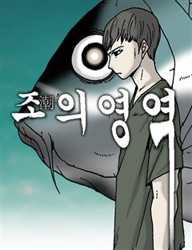
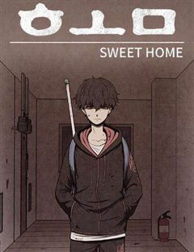
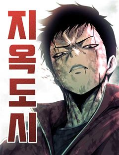
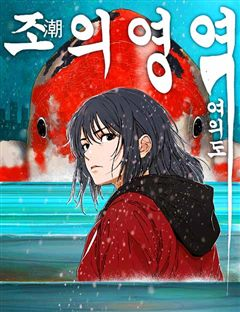

조의 영역 같은 웹툰 추천

조의 영역 · 조석
조의 영역 재밌게 봤다면 이 웹툰들도 좋아할 거예요. 같은 장르이면서 바디 호러, 아포칼립스 같은 요소가 겹치는 작품을, 겹치는 요소가 많은 순서로 20개 골랐어요.
2026-10-03 기준 · 네이버웹툰·카카오웹툰·레진코믹스 · 성인 작품 제외
내 취향으로 직접 골라 추천받기 →-
1
 네이버웹툰
네이버웹툰수상한 다이어트 클럽
모태 통통 ‘고양순’은 부모님의 등쌀에 못이겨 박박사 다이어트 클럽에 입소한다. 어딘가 수상해 보이는 박박사지만, 그녀의 이력 만큼은 누구보다 확실하다. 성공률 100%를 자랑하는 이곳의 퇴소 조건은 단 하나, ‘목표 체중을 다 감량해야만 하는 것!…
바디 호러스릴러·공포네이버웹툰에서 보기 → -
2
 네이버웹툰
네이버웹툰모닥불 친구들
어느 날 추억의 애니메이션 '모닥불 친구들' 세상으로 쏙 들어가 버린 회사원 채수! 평화로운 숲속에서 귀여운 동물 친구들과 놀며 잃어버린 동심을 되찾아가는데.. 사실 그들의 친절에는 섬뜩한 비밀이 숨겨져 있다!? 귀엽지만 오싹한 동심 가득 판타지 호…
바디 호러스릴러·공포네이버웹툰에서 보기 → -
3
 네이버웹툰
네이버웹툰르르르
평범한 일상속에서 갑자기 등장한 괴생물체와 그 주위에서 한명씩 학생들의 괴물화. 평범함은 완전히 망가졌고, 구조를 기대하기도 힘든 상황. 학생들은 저마다의 방법으로 뭉치고 생존해 나간다.
바디 호러스릴러·공포네이버웹툰에서 보기 → -
4
 네이버웹툰
네이버웹툰괴이현상 하나
괴이현상 규칙 하나, ?̵̡͖̺̮͚̱͚̿͛̋͌̑͡?̢̨̲̤̞͙̟̌̏́̒̔̎̅͌͠͝?̴̰̭̭͉̬͙̲̄̀̐̿͐͋͛͡͠?̧͖͈̮̞̯̯̟̲̒̏̒͘͘͠을 잊지 마세요. 괴이현상 규칙 둘, 중심부 ?̭̠͙̖̹̪͎͗̒̒̋͒͠?̸̫͈̯͉̝̰͇́̒̀̏́͂͛͟͠을 찾…
바디 호러스릴러·공포네이버웹툰에서 보기 → -
5
 네이버웹툰
네이버웹툰기생번식
스릴러 대가 <꼬리잡기> 바쉬 작가 신작. 근원을 알 수 없는 기이한 현상을 겪게 된 세 사람. 덕분에 세 사람은 원하던 모든 것을 얻게 되지만… 처음엔 즐거움만 선사하던 그것이 점점 그들의 일상, 그들의 생사까지 지배하려 한다는 사실을 깨닫는다.…
바디 호러스릴러·공포네이버웹툰에서 보기 → -
6
 네이버웹툰
네이버웹툰귀신이 곡할 노릇
결혼정보회사를 통해 만난 완벽한 남자 권실원. 모두가 그를 좋아하지만, 정작 결혼을 약속한 이인해는 권실원을 두려워한다. 그의 완벽한 집착이 말 그대로 선을 넘었기 때문이다.
바디 호러스릴러·공포네이버웹툰에서 보기 → -
7

네이버웹툰스위트홈
절망의 세상을 비관하고 스스로를 고립시킨 한 소년, 하지만 이제 소년은 밖으로 나가고 싶다.
아포칼립스스릴러·공포네이버웹툰에서 보기 → · 스위트홈 같은 웹툰 → -
8

네이버웹툰지옥도시
400만 명이 거주하는 수도권 거대 도시 송천 광역시, 그곳에서 유도선수를 꿈꾸던 고등학생 민호 앞에 나타난 정체불명의 괴생명체와 한 소녀. 순식간에 지옥으로 변해버린 송천시에서 민호는 과연 살아남을 수 있을 것인가..!
아포칼립스스릴러·공포네이버웹툰에서 보기 → -
9

네이버웹툰조의 영역: 여의도
거대한 물고기가 인간의 영역을 점점 더 빼앗아가는 세계 속에서 인간들은 서로 함께 하거나 이용한다. 거대한 물고기의 위협은 전혀 줄지 않았고, 마주치는 사람들은 안심해야 할 대상은 커녕 예전보다 더 위험한 존재일 뿐이다. 생존이라는 인간의 본능은 괴…
아포칼립스스릴러·공포네이버웹툰에서 보기 → -
10네이버웹툰
귀여WAR
<!>주의 그들의 눈을 똑바로 응시하지 마세요. 공격을 망설이지 마세요. 우리의 적은 귀여우니까. 어느 날 지구에 나타난 귀여운 모습의 괴생물체. 그 외모에 방심하는 사이 인류의 모든 문명은 파괴되었다. 파괴된 세상에서 살아남기 위한 주인공 시홍의…
아포칼립스스릴러·공포네이버웹툰에서 보기 → -
11
 네이버웹툰
네이버웹툰공포 쯔꾸르 생존기
전설의 공포게임 [비현실]을 실행한 순간 게임 속에 갇힌 이현. 한밤중의 학교에서 눈을 뜬 그는 의문의 여고생 다연과 만난다. 이곳에서 살아남는 방법은 단 하나, 섬뜩한 퍼즐을 풀고 숨겨진 규칙을 찾아낼 것. 과연 두 사람은 죽음의 게임을 끝내고 현…
아포칼립스스릴러·공포네이버웹툰에서 보기 → -
12
-
13
 네이버웹툰
네이버웹툰종말에서 살아남기
평생 지하실에 감금되어 훈련받은 소년. 그리고 그를 가둔 미치광이 아빠가 하는 말 "종말이 온다." 지금껏 수없이 반복해온 훈련과 생존 지식으로 종말에서 살아남아야만 한다.
아포칼립스스릴러·공포네이버웹툰에서 보기 → -
14
 네이버웹툰
네이버웹툰개같이 탈출
"살아남으라고? 나는 자그만 말티즈란 말이야!" 세상 따뜻하고 포근한 가정집에서 살아온 삐용이. 언니 품에서 그저 귀엽기만 하면 되는 견생이었는데... 갑자기 가족들과 모든 인간이 사라져버렸다. 혼자서는 아무것도 할 줄 모르는데, 괴물 좀비 개들이…
아포칼립스스릴러·공포네이버웹툰에서 보기 → -
15카카오웹툰
우리 집에 갇혀버린 남주들
소설 속 대재벌가의 상속녀로 환생했다. 문제는 이 세계가 바이러스 괴물로 인해 곧 멸망 예정이라는 거. 남는 건 돈뿐이겠다, 얼른 시골에 저택을 매입해서 괴물을 피할 대피소를 만들고 있었는데... 내 예상보다 훨씬 빠르게 세상이 멸망하고 말았다, X…
아포칼립스스릴러·공포카카오웹툰에서 보기 → -
16
 카카오웹툰
카카오웹툰문 뒤에 지옥이 있다
'문'을 열 때마다 문 뒤의 공간이 무작위로 뒤섞이는 세상. 그곳에서 살아남은 학생들. 가족들의 곁으로 돌아가기 위해, 집으로 돌아가기 위해선 저 '문'을 열어야만 한다.
아포칼립스스릴러·공포카카오웹툰에서 보기 → -
17
 네이버웹툰
네이버웹툰좀비묵시록 82-08
탕-! 의문의 선박 속 '그것'으로부터 시작된 괴이한 전염병은 서울을 죽음의 도시로 만들어버린다. 예고 없이 닥쳐온 심판의 그날부터 세상의 모든 질서는 완전히 리셋되었다. 처절한 생존 경쟁 속에서 프로젝트명 [좀비묵시록 82-08]이 시작된다.
아포칼립스스릴러·공포네이버웹툰에서 보기 → -
18
 카카오웹툰
카카오웹툰임기 첫날에 게이트가 열렸다
좌충우돌 우당탕탕 아포칼립스 헌터레이드 정치활극 모시던 국회의원의 명령으로 얼떨결에 국회의원 선거에 출마한 청년 한승문. 당연히 아무 기대도 안 하고 나간 선거였지만 갑자기 유일한 상대 후보가 정치자금법 위반으로 잡혀가며 천운으로 국회의원에 당선되어…
아포칼립스스릴러·공포카카오웹툰에서 보기 → -
19카카오웹툰
좀비가 날 물지 않아
이환이 깨어났을 때 세상은 변해 있었다. 산자들의 피를 갈구하는 좀비와 살기 위해 도망치는 인간들. 그런데... "좀비들이 왜 나는 물지 않지?" 엄청나게 강해진 힘과 좀비들의 눈을 닮은 붉게 물든 한쪽 눈. 그리고 피를 볼 때 마다 느껴지는 알 수…
아포칼립스스릴러·공포카카오웹툰에서 보기 → -
20
 네이버웹툰
네이버웹툰뻐꾸기는 운다
대륙을 덮친 거대한 해일과 연이은 독기의 발생으로 멸망 위기에 몰린 인류. 살아남은 사람들은 해수면 가득한 독기를 피해 거인의 몸 위에 도시를 짓고 살아간다. 독기에 찬 바닥에 남겨진 하층민 소년은 주인의 아들이 자신과 똑같이 생긴 걸 알게 되는데.…
아포칼립스스릴러·공포네이버웹툰에서 보기 →